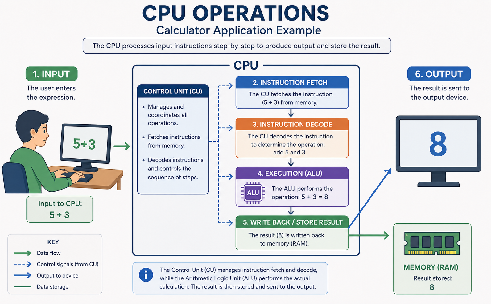
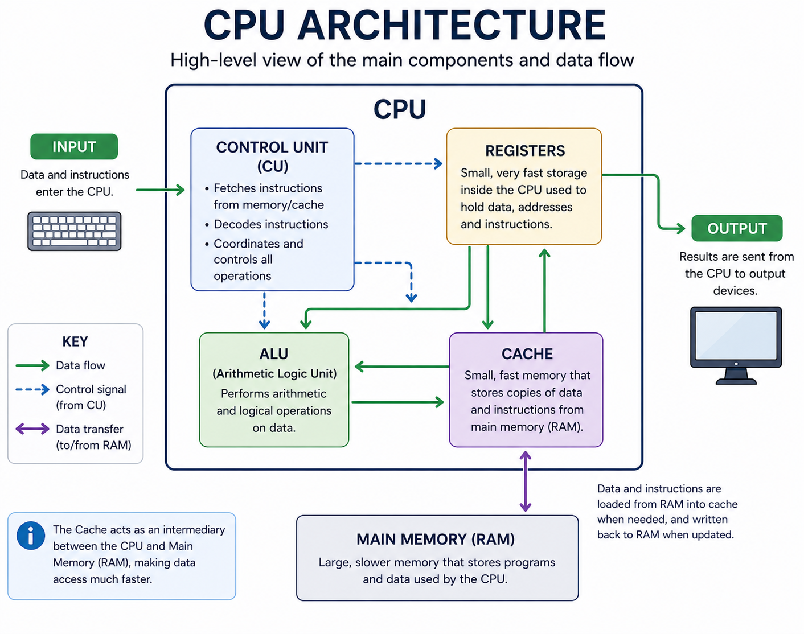

Describe the functions and interactions of the main CPU components
Understanding the Central Processing Unit (CPU)
The Central Processing Unit (CPU) is often described as the “brain” of the computer because it performs all the essential processing tasks. It carries out instructions from programs by controlling the flow of data, performing calculations, and managing communication between different parts of the computer. The CPU is made up of several core components, including the control unit, arithmetic logic unit, registers, cache memory, and an internal clock. These elements work together to process data and execute instructions accurately and efficiently.
At the heart of the CPU is the Control Unit (CU). Its role is to manage and coordinate the actions of the CPU by directing the flow of data between the processor, memory, and input/output devices. It fetches instructions from memory, decodes them into signals that other components can understand, and ensures that they are carried out in the correct order. The control unit does not process or store data itself, but it orchestrates all the operations that occur within the CPU.
Another important part of the CPU is the Arithmetic Logic Unit (ALU), which is responsible for carrying out all mathematical and logical operations. These include basic arithmetic like addition and subtraction, as well as logical comparisons such as checking if one value is greater than or equal to another. The ALU receives instructions from the control unit and processes data that is temporarily stored in special locations called registers.
Registers are small, fast storage units located within the CPU. They are used to hold data and instructions while they are being used or processed. Each register has a specific purpose. For example, the Program Counter (PC) keeps track of the address of the next instruction to be executed, while the Instruction Register (IR) holds the current instruction. The Memory Address Register (MAR) stores the address in memory that the CPU wants to access, and the Memory Data Register (MDR) holds the data being transferred to or from memory. The Accumulator (ACC) is used to store the results of operations performed by the ALU. These registers work together to keep data flowing smoothly within the CPU and help ensure instructions are processed quickly.
To speed up processing even further, CPUs include a special type of memory called cache. Cache is much faster than main memory (RAM), but it is also much smaller. Cache stores copies of frequently accessed data so the CPU can retrieve it more quickly than if it had to fetch it from RAM every time. There are typically three levels of cache. L1 cache is the smallest and fastest, located directly on the CPU core. L2 cache is larger and slightly slower, often shared by a few cores. L3 cache is the largest and slowest, usually shared across all cores of a multi-core processor. When the CPU needs data, it checks the cache levels in order before reaching out to RAM, which helps reduce delays and increase efficiency.
An important factor in the performance of a CPU is its clock speed, which is measured in hertz (Hz). The clock speed indicates how many cycles the CPU can complete per second. For example, a CPU running at 3 gigahertz (GHz) can carry out up to three billion cycles every second. Each cycle represents an opportunity to fetch, decode, or execute an instruction, or move data around inside the CPU. A higher clock speed generally allows a processor to perform more tasks in less time, but it also generates more heat and consumes more power. Therefore, clock speed must be balanced with other design features like the number of cores and the size of cache memory.
The CPU also interacts closely with both primary memory (RAM) and secondary memory (such as hard drives or solid-state drives). When a program is running, data and instructions are loaded from secondary memory into RAM. The CPU then fetches this data using the MAR and MDR, processes it, and may temporarily store results in registers. If the data is not needed immediately, it can be written back to RAM or saved to a secondary storage device. These interactions are coordinated through a system of buses that transfer data, control signals, and memory addresses between the CPU and other components.
In summary, the CPU is a complex but highly organized unit that ensures all parts of a computer work together to perform tasks. By understanding how its internal components—control unit, ALU, registers, cache, and clock—function and interact with memory, students gain insight into the fundamental processes that power modern computing systems.

Approaches to Learning (ATL)
Thinking skills: Decomposition of CPU processes; analyzing cache hierarchies.
Communication skills: Diagramming CPU internals with labeled components and data flow arrows.
Research skills: Investigating real-world CPU models and comparing their cache architecture.

Practice questions
Describe how the Control Unit (CU), Arithmetic Logic Unit (ALU), and registers interact during the fetch–decode–execute cycle for a simple addition instruction.
[3 marks • SL]
Show the markscheme
Draw a simple diagram of the CPU showing the Control Unit (CU), ALU, and at least three registers.
Label arrows to indicate:
(1) control signals from CU;
(2) data moving to/from ALU;
(3) instruction flow into the IR.
[3 marks • SL]
Show the markscheme
Vocabulary
- Central Processing Unit (CPU)
- The part of a computer that executes program instructions and coordinates the activity of other components; it processes data and controls information flow.
- Control Unit (CU)
- The CPU subcomponent that fetches and decodes instructions and sends control signals so the ALU, registers, memory and I/O act in the correct sequence.
- Arithmetic Logic Unit (ALU)
- The portion of the CPU that performs arithmetic (e.g., add, subtract) and logical (e.g., compare) operations on data supplied by registers.
- Register
- A very small, very fast storage location inside the CPU used to hold instructions, addresses, operands or intermediate results while they are processed.
- Program Counter (PC)
- A register that holds the address of the next instruction to be fetched from memory.
- Instruction Register (IR)
- A register that holds the instruction currently being decoded and executed.
- Memory Address Register (MAR)
- A register that holds the memory address the CPU will read from or write to.
- Memory Data Register (MDR)
- A register that temporarily holds data being transferred between CPU and memory.
- Accumulator (ACC)
- A register commonly used to store intermediate results produced by the ALU.
- Cache
- A small amount of very fast memory near the CPU that stores frequently used instructions and data so the CPU can access them more quickly than from RAM.
- Clock speed (clock rate)
- The frequency of the CPU’s internal clock, measured in hertz; it sets how many basic cycles the CPU can perform per second.
- Clock cycle
- One tick of the CPU clock when part of an instruction can be processed; many instructions require multiple cycles.
- Bus
- The set of signal lines used to transfer data, addresses and control signals between the CPU, memory and peripherals.